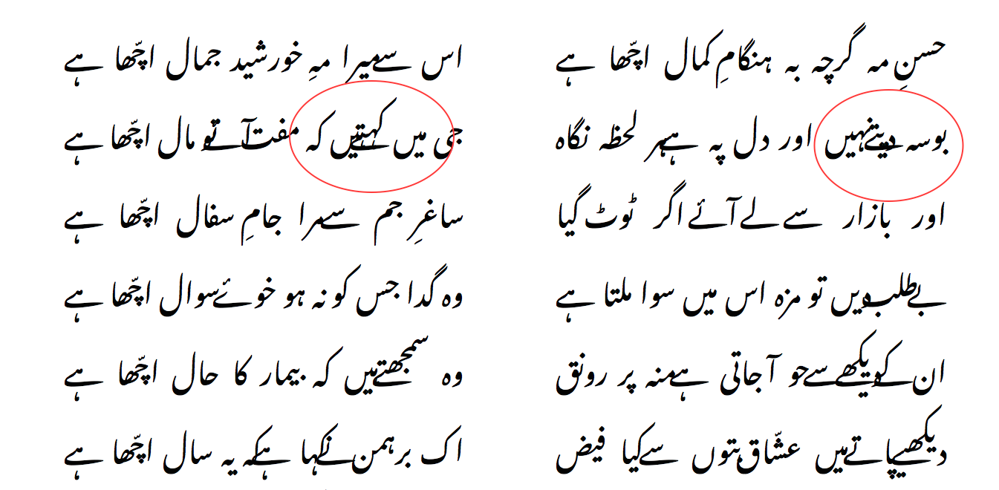

Quick overview of Google Noto Nastaleeq Urdu web font
Today, Google Web Fonts Early Access announced experimental draft of Noto Nastaleeq (NN) typeface. This move makes it a first Urdu Nastaleeq font available in famous web fonts repository.
Using as Desktop font:
The typeface is available to download as a single True-Type Font (TTF) file in compressed ZIP format. The major thing to notice is the file size that is amazingly small (~289KB) but keeping in mind the fact that this is an experimental release so file size may increase with future updates. Nevertheless, download the file and simply install the font to use in various system software as well as read web sites that list this typeface in their font-family.
Using as Web font:
Now comes the interesting part where you have a website in Urdu language and you would like to set Nastaleeq typeface as part of default font-family. You can get information on it from Google Web Fonts Early Access page. Grab the CSS from the page or here you go:
<link rel="stylesheet" href="//fonts.googleapis.com/earlyaccess/notonastaliqurdudraft.css">or Import into CSS:
@import url(http://fonts.googleapis.com/earlyaccess/notonastaliqurdudraft.css);
Then update the font-family to include Noto Nastaleeq as suggested and you are good to go.
body {
font-family: 'Noto Nastaliq Urdu Draft', serif;
}Reliability / Issues:
Since this is an experimental release, I would highly recommend NOT to completely rely on it – as:
- characters kerning, mapping and rendering are still strong issues.
- it may still be missing important glyphs that complete the words dictionary in Urdu.
Google engineer Behdad Esfahbod had a test drive with Noto Nastaleeq Urdu typeface where he tried to tackle some of currently known issues using CSS. In fact, even after some fixes, the main issue with character mapping and kerning remains unresolved as shown in screenshot below.
Messed up character mapping and rendering with Noto Nastaleeq
The Noto project is hosted at Google Code. All known issues with Noto Nastaleeq can be seen at project's Issue Tracker. If you are testing this release then you can also file a new issue.
Alternatives:
Urdu fonts have strong support with Naskh and Nastaleeq typefaces for desktop use but the web still lacks the optimized support for Urdu fonts, in particular case of Nastaleeq typeface. If you are looking for a bit more comprehensive web support for Urdu with mix of Naskh and Nastaleeq then you can try few of existing projects.
Some of the very well known projects are by Center for Language Engineering (CLE), formely Center for Research in Urdu Language Processing (CRULP). They have number of fonts, in both Naskh and Nastaleeq typefaces that are available to use under appropriate public licenses. However, only Nafees Pakistani Web Naskh is an optimized web compatible font. Taj Nastaleeq by Alqlm is another very comprehensive Urdu Nastaleeq font available for desktop use only under public license. The team behind Taj Nastaleeq has reportedly been working on its web edition.
If you are just a web user on PC and only wish to ready and write in Urdu (Naskh/Nastaleeq) over the web then you can try Pak Urdu Installer made by M Bilal that makes PC compatible for Urdu with simple few steps installation process.
Conclusion
Nevertheless, Noto Nastaleeq Urdu definitely is a milestone in web fonts category and we surely look forward to more updates from Google and have it released as a complete working version soon.
PS. Don't grab the TTF file and head to Font Squirrel web font generator – that by the way will reject the conversion because of this font being blacklisted by Monotype. Duh!